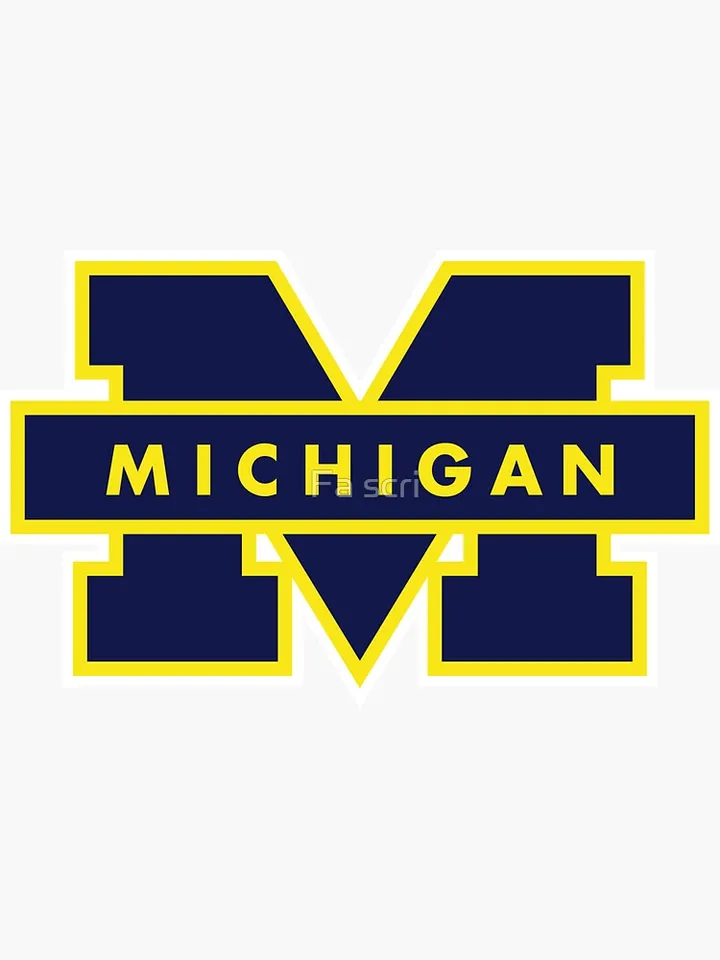
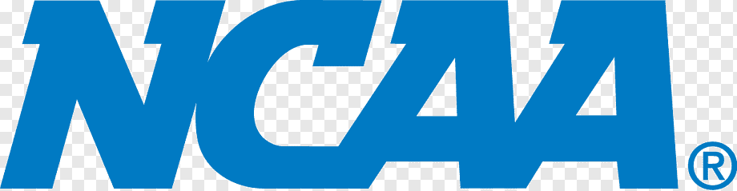
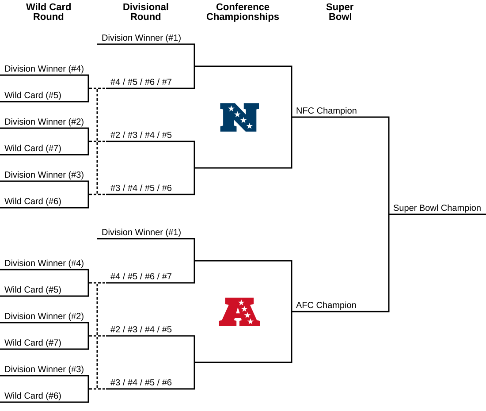

Michigan footballs schedule is farly easy this year, but last year we had a very hard schedule playing 3 Oregon,10 Indiana,16 Illinion,1 Ohio state and ect. This year I have very high hopes for us to make the playofffs, we just have to beat ohio state this year and if we do that would be are fith time in a row beating them.

photo by unknown from unknown
Bryce Underwould is michigans new qurterback that was going to commit to lsu but michigan gave him a 12 million doller contract for him to come to Michigan,so ovously he commited to Michigan. Since Bryce has started to play a coupe of games now it is safe to say he is worth 13 million, he looks outstanding right now, Michigans offensive qurtanator just needs to call more pass plays so Bryce can to to lunch the ball or run it him self. Bryce Underwould is easiy or best offencive player for Michigan football right now because he can scan the feild easiy and throw a dart.
My thoughts of the new college football playoff bracket is good.I realy like the new 12 team system because I get to watch more football. Another reason on why i like it is because there are way more realy good football games to watch. I realy like when the big ten plays the sec because the teams that are playing have very differant play stles.

photo by unknown from unknown

photo by unknown from unknown